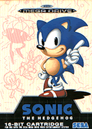

Sonic the Hedgehog
*Mega Drive*

Music | Cheats and Tips | Cheat Codes | Boxes | Screenshots | Walkthrough
You are listening to: Green Hill Zone
Contents
*Introduction*
*Release Date Facts*
*In Depth Information*
1 | 2 | 3 | 4 | 5
Sonic's first appearance on the Sega Mega Drive, or the Genesis as our great freinds in America like to call it. The style of the game was basically the same as the Master System and Game Gear offerings, but as Sonic was now on the 16-Bit instead of the 8-Bit, this gave way for far better graphics and levels.
The aim of the game is the same as described in the Master System version - Dr. 'Eggman' Robotnik plans to threaten all of Mobius with his little mechanic monsters of which cute furry animals are the source of. With the use of these, Robotnik wants Mobius as his kingdom. Again, Fatboy has not yet found the
seven chaos emeralds which are littered somewhere on the planet. All is not lost though, as Sonic has plans of his own, to stop the Egg of Madness and to retrieve the chaos emeralds on the way, which conveniently happen to be floating about in another dimension. Can Sonic do it? |
|  |
First Appearances of:
Sonic The Hedgehog, Doctor Robotnik, 360 Degree Special Stage |
*In Depth Information*
The concept of Sonic the Hedgehog
is not hard to grasp, and you need to seek medical help if you do find it hard to take in. You take control of the blue blur himself, speeding through the vast levels in the game, while at the same time dodging the many traps set out to impede his progress using his super speed and his super spin attack, which will help destroy Eggman's many robots.
To make your journey suck just that little bit more, you have to contend with a guy who's eaten a few Hamburgers too many at the end of each zone. Yes, it's our chubby friend, Dr. Robotnik. As in the Master System version, he changes his hovercraft every level, so you must find out his pattern and destroy him. The very last level is a big boss, where Eggman isn't in his hovercraft for once! What sucks is that he may be a bit trickier to beat than the other bosses.
You need to collect all of the chaos emeralds in order to stop Eggman's plans completely, and you do this by finishing a level with over 50 rings. when you get there, a massive ring will appear. Jump into that to enter a whole new dimension. This Special Stage has you floating around a 360 Degree environment, full of bumpers and icons, to find the Chaos emerald encased within special diamonds that you have to hit to make them disappear.
Hitting different icons affect different situations. For example, hit a
circle with an 'R' on it and the 360 Degree rotation will reverse the other way. Others include 'Up' and 'Down' circles which, amazingly, speed up or down the rotation. These are just
a few things you can find in the Special Stage, which you can use to your advantage, or it can just be a pain. You decide.
The Mega Drive/Genesis version of Sonic 1 has major improvements than the Master System one, being 16-Bit and all. Aswell as the graphics, the music's
top notch. The extra 8-Bit really makes a difference. The levels are longer, the bosses harder (but still easy), and Scrap Brain's the bomb! Obviously not now, better Sonic games are out. If you're out for a little bit of nostalgia anyway, best get Sonic 1 out from the
attic, eh? You know it makes sense.